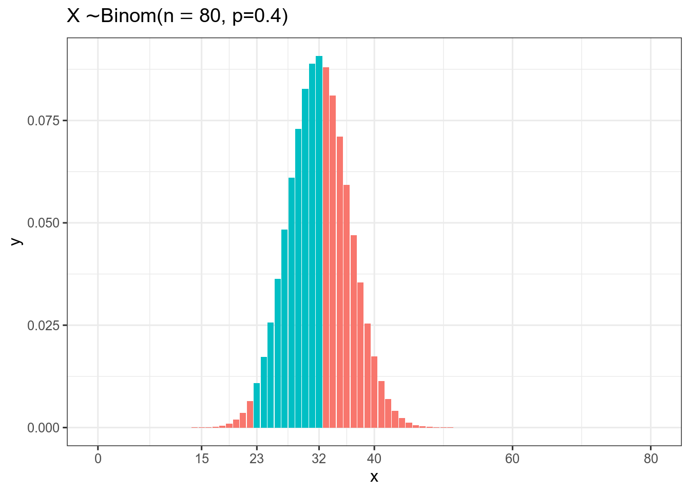

На предыдущем занятии, мы обсуждали, что вероятность, выделенная на графике, равна интегралу нормального распределения в указанном промежутке:
Ее можно посчитать двумя способами:
## 0.3860258 with absolute error < 4.3e-15## [1] 0.3860258Рассмотрим теперь дискретное распределение. Какова вероятность, выделенная на графике?
tibble(x = 0:80,
y = dbinom(x, 80, 0.4),
z = ifelse(x >= 23 & x <= 32, TRUE, FALSE)) %>%
ggplot(aes(x, y, fill = z)) +
geom_col(show.legend = FALSE)+
scale_x_continuous(breaks = c(0, 15, 23, 32, 40, 60, 80))+
labs(title = TeX("$X \\sim Binom(n = 80,\\, p=0.4)$"))
Ее тоже можно посчитать двумя способами:
## [1] 0.534717Однако, если мы попробуем посчитать это при помощи функции pbinom(), мы получим другой результат:
## [1] 0.5238404Дело в том, что в непрерывном варианте, мы не исключаем значение, когда вычитаем: (-∞, 32) - (-∞, 23) = (23, 32). Однако в дискретном варианте происходит другое (-∞, 32] - (-∞, 23] = [24, 32]. Так что, верным способом посчитать выделенную вероятность будет следующий:
## [1] 0.5347171. Байесовский апдейт нормального распределения
Встроенный датасет ChickWeight содержит вес цыплят (weight) в зависимости от типа диеты (Diet). Мы будем анализировать 20-дневных птенцов.
Начнем с апостериорных параметров для наблюдений \(x_1, ... x_n\) со средним \(\mu_{data}\) известной дисперсией \(\sigma_{known}^2\)
1.1 Байесовский апдейт нормального распределения: дискретный вариант
Мы можем рассматривать эту задачу как выбор между несколькими моделями с разными средними:
tibble(x = rep(1:400, 6),
density = c(dnorm(unique(x), mean = 125, sd = 70),
dnorm(unique(x), mean = 150, sd = 70),
dnorm(unique(x), mean = 175, sd = 70),
dnorm(unique(x), mean = 200, sd = 70),
dnorm(unique(x), mean = 225, sd = 70),
dnorm(unique(x), mean = 250, sd = 70)),
dataset = rep(1:6, each = 400)) %>%
ggplot(aes(x, density, color = factor(dataset)))+
geom_line()Дальше мы можем точно так же апдейтить, как мы делали раньше:
tibble(mu = seq(125, 250, by = 25),
prior = 0.2,
likelihood = c(prod(dnorm(chicks$weight, mean = 125, sd = 70)),
prod(dnorm(chicks$weight, mean = 150, sd = 70)),
prod(dnorm(chicks$weight, mean = 175, sd = 70)),
prod(dnorm(chicks$weight, mean = 200, sd = 70)),
prod(dnorm(chicks$weight, mean = 225, sd = 70)),
prod(dnorm(chicks$weight, mean = 250, sd = 70))),
product = prior*likelihood,
posterior = product/sum(product)) ->
results
results1.2 Байесовский апдейт нормального распределения: непрерывный вариант
Во первых, нам понадобиться некоторая мера, которая называется точность (precision):
\[\tau = \frac{1}{\sigma^2}\]
\[\tau_{post} = \tau_{prior} + \tau_{data} \Rightarrow \sigma^2_{post} = \frac{1}{\tau_{post}}\]
\[\mu_{post} = \frac{\mu_{prior} \times \tau_{prior} + \mu_{data} \times \tau_{data}}{\tau_{post}}\]
Так что если нашим априорным распределением мы назовем нормальное распределение со средним около 180 и стандартным отклонением 90, то процесс байсовского апдейта будет выглядеть вот так:
sd_prior <- 90
sd_data <- sd(chicks$weight)
sd_post <- (1/sd_prior+1/sd_data)^(-1)
mean_prior <- 180
mean_data <- mean(chicks$weight)
mean_post <- weighted.mean(c(mean_prior, mean_data), c(1/sd_prior, 1/sd_data))
tibble(x = rep(1:400, 3),
density = c(dnorm(unique(x), mean = mean_prior, sd = sd_prior),
dnorm(unique(x), mean = mean_data, sd = sd_data),
dnorm(unique(x), mean = mean_post, sd = sd_post)),
dataset = rep(c("prior", "data", "posterior"), each = 400)) %>%
ggplot(aes(x, density, color = dataset))+
geom_line()2. Вопросы к апостериорному распределению
A frequentist uses impeccable logic to answer the wrong question, while a Bayesian answers the right question by making assumptions that nobody can fully believe in. (P. G. Hammer)
- попытка оценить параметр θ и какой-нибудь интервал, в котором он лежит (см. предыдущий раздел).
- ответить на вопросы вроде
- какая вероятность что значение θ больше некоторого значения \(x\)?
- какая вероятность что значение θ лежит в интервале \([x; y]\)?
- и т. п.
И это не p-value! Это настоящие вероятности!
3. Фриквентистские доверительные интервалы
Интерпретация доверительных интервалов не легкое дело. Если вы знакомы с этим понятием и считаете, что все ясно: раз, два, три, четыре, пять.
Доверительный интервал для среднего:
\[\bar{x} \pm \text{z-score} \times \frac{\sigma}{\sqrt{n}}\]
z-score — это число в станадртных отклонениях нормального распределения, которые содержат центральные 95%, 99% и т. п. данных. Для 95% доверительного интервала это 1.96, для 99% доверительного интервала это 2.58.
## [1] 1.959964## [1] 2.575829Построим доверительный интервал для среднего веса 20-дневных цыплят из встроенного датасета ChickWeight.
ChickWeight %>%
filter(Time == 20) %>%
summarise(mean = mean(weight),
ci = 1.96 * sd(weight)/sqrt(n()),
min = mean - ci,
max = mean + ci)Визуализация доверительного интервала
3.1
Посчитайте 95% доверительный интервал для среднего значения уровня кислотности (ph) в датасете про мочу. Укажите нижнюю границу доверительного интервала (mean - ci) (два знака после запятой).
3.2 Бутстрэп
Если нужны какие-то более изощренные статистики, то можно использовать бустрэп.
library(bootstrap)
set.seed(42)
boot_mean <- bootstrap(urine$ph, nboot = 1000, theta = mean)
tibble(x = boot_mean$thetastar) %>%
ggplot(aes(x))+
geom_histogram()## `stat_bin()` using `bins = 30`. Pick better value with `binwidth`.
3.3 Доверительный интервал и биномиальные данные
Сначала данные:
- количество “не” в 311 рассказов А. Чехова
- число слов в каждом рассказе
chekhov <- read_csv("https://raw.githubusercontent.com/agricolamz/2019_BayesDan_winter/master/datasets/chekhov.csv")## Parsed with column specification:
## cols(
## titles = col_character(),
## word = col_character(),
## n = col_double(),
## n_words = col_double()
## )chekhov %>%
mutate(trunc_titles = str_trunc(titles, 25, side = "right"),
average = n/n_words) ->
chekhovРаспространение логики доверительного интервала на биномиальные данные называется интервал Вальда:
\[\bar{x} = \theta; \sigma = \sqrt{\frac{\theta\times(1-\theta)}{n}}\]
Тогда интервал Вальда:
\[\theta \pm z\times\sqrt{\frac{\theta\times(1-\theta)} {n}}\]
Есть только одна проблема: работает он плохо. Его аналоги перечислены в других работах:
- assymptotic method with continuity correction
- Wilson score
- Wilson Score method with continuity correction
- Jeffreys interval
- Clopper–Pearson interval (default in R
binom.test()) - Agresti–Coull interval
- … см. пакет
binom
chekhov %>%
slice(1:30) %>%
group_by(titles) %>%
mutate(low_ci = mosaic::binom.test(x = n, n = n_words, ci.method = "Clopper-Pearson")$conf.int[1],
up_ci = mosaic::binom.test(x = n, n = n_words, ci.method = "Clopper-Pearson")$conf.int[2]) %>%
ggplot(aes(trunc_titles, average))+
geom_point()+
geom_pointrange(aes(ymin = low_ci, ymax = up_ci))+
coord_flip()+
labs(title = 'Среднее и 95% CI употребления "не" в рассказах А. Чехова',
x = "", y = "")## Registered S3 method overwritten by 'mosaic':
## method from
## fortify.SpatialPolygonsDataFrame ggplot2
В базовом пакете функция binom.test() не позволяет выбирать тип доверительного интервала. Вызвать аргумент ci.method = "Clopper-Pearson" можно, если включить библиотеку mosaic.
3.4
В базе данных Phoible, в которой собраны фонологические инвентари в языках мира. В датасет записано три переменных:
- language — язык;
- consonants — количество согласных;
- phonemes — количество фонем.
Посчитайте долю, которая составляет согласные от всего фонологического набора каждого языка и доверительный интервал для него (ci.method = "Clopper-Pearson"). Полученные интервалы округлите до 3 знаков после запятой, а в ответ укажите название языка на букву N с интервалом равный 0.514.
4. Байесовский доверительный интервал
4.1 Симметричный интервал (equal-tailed interval): медиана и квантили
Байесовский доверительный \(k\)-% интервал (по-английски credible interval) — это интервал \([\frac{k}{2}, 1-\frac{k}{2}]\) от апостериорного распределения. Давайте проапдейтим данные рассказов Чехова при помощи априорного распределения с параметрами (\(\alpha = 5.283022\), \(\beta = 231.6328\)), а дальше можем использовать функцию qbeta(), чтобы получить интервал, в котором находятся центральные \(k\)%.
chekhov %>%
slice(1:30) %>%
group_by(trunc_titles) %>%
mutate(beta_prior = n_words-n,
alpha_post = n + 5.283022,
beta_post = beta_prior + 231.6328,
median_post = qbeta(.5, alpha_post, beta_post),
eq_t_int_l = qbeta(.025, alpha_post, beta_post),
eq_t_int_h = qbeta(.975, alpha_post, beta_post),
low_ci = mosaic::binom.test(x = n, n = n_words)$conf.int[1],
up_ci = mosaic::binom.test(x = n, n = n_words)$conf.int[2]) %>%
ggplot(aes(x= trunc_titles))+
geom_pointrange(aes(y = average, ymin = low_ci, ymax = up_ci), color = "royalblue")+
geom_pointrange(aes(y = median_post, ymin = eq_t_int_l, ymax = eq_t_int_h), color = "tomato", position = position_nudge(x = -0.35))+
coord_flip()+
labs(title = 'Доверительные интервалы употребления "не" в рассказах А. Чехова',
x = "", y = "",
caption = "красные --- фриквентистский; синий --- байесовский eq-t")
4.2 Интервал максимальной (апостериорной) плотности (Highest (posterior) density interval): мода и HDI
chekhov %>%
slice(1:30) %>%
group_by(trunc_titles) %>%
mutate(beta_prior = n_words-n,
alpha_post = n + 5.283022,
beta_post = beta_prior + 231.6328,
median_post = qbeta(.5, alpha_post, beta_post),
moda_post = (alpha_post-1)/(alpha_post+beta_post-2),
hdi_int_l = hdi(qbeta, shape1 = alpha_post, shape2 = beta_post, credMass = 0.95)[1],
hdi_int_h = hdi(qbeta, shape1 = alpha_post, shape2 = beta_post, credMass = 0.95)[2],
eq_t_int_l = qbeta(.025, alpha_post, beta_post),
eq_t_int_h = qbeta(.975, alpha_post, beta_post),
low_ci = mosaic::binom.test(x = n, n = n_words)$conf.int[1],
up_ci = mosaic::binom.test(x = n, n = n_words)$conf.int[2]) %>%
ggplot(aes(x= trunc_titles))+
geom_pointrange(aes(y = average, ymin = low_ci, ymax = up_ci), color = "royalblue", position = position_nudge(x = 0.25))+
geom_pointrange(aes(y = median_post, ymin = eq_t_int_l, ymax = eq_t_int_h), color = "tomato")+
geom_pointrange(aes(y = moda_post, ymin = hdi_int_l, ymax = hdi_int_h), color = "palegreen3", position = position_nudge(x = -0.25))+
coord_flip()+
labs(title = 'Доверительные интервалы употребления "не" в рассказах А. Чехова',
x = "", y = "",
caption = "красные --- фриквентистский; синий --- байесовский eq-t; зеленый --- байсовский hdi")
В качестве аргумента в пользу HDI всегда приводят вот такое распределение:

4.4
В базе данных Phoible, в которой собраны фонологические инвентари в языках мира. В датасет записано три переменных:
- language — язык;
- consonants — количество согласных;
- phonemes — количество фонем.
Посчитайте медиану и 80% симметричный интервал, которую составляет согласные от всего фонологического набора каждого языка, используя априорное бета распределение с параметрами α = 9.300246 и β = 4.4545. В ответе укажите язык, у которого интервал равен 0.083.
4.5
В базе данных Phoible, в которой собраны фонологические инвентари в языках мира. В датасет записано три переменных:
- language — язык;
- consonants — количество согласных;
- phonemes — количество фонем.
Посчитайте моду и 80% интервал максимальной апостериорной плотности, которую составляет согласные от всего фонологического набора каждого языка, используя априорное бета распределение с параметрами α = 9.300246 и β = 4.4545. В ответе укажите язык, у которого интервал равен 0.091.
phoible <- read_csv("https://raw.githubusercontent.com/agricolamz/2019_BayesDan_winter/master/datasets/phoible_n_consonants.csv")
phoible %>%
group_by(language) %>%
rowwise() %>% # это нужно, так как авторы HDInterval не векторизовали hdi
mutate(...) %>%